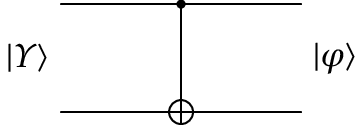
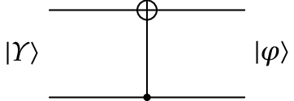

8. Sistemas com vários qbits
2 qbits
No caso de dois qbits há 4 estados próprios, correspondentes aos 4 possíveis valores que podem ser representados com 4 cbits. O estado do sistema de 2 qbits será qualquer combinação linear desses 4 estados próprios:
em que os quatro números complexos verificam a condição de normalização:
Os quatro números reais são as probabilidades do estado ser um dos quatro estados próprios (valores possíveis de dois cbits). Os valores possíveis dos dois cbits podem ser representados por matrizes de uma coluna e quatro linhas:
Como tal, o estado do sistema é representado por uma matriz coluna com quatro números complexos:
Produto tensorial
Um caso particular do estado de 2 qbits é quando o estado do primeiro qbit for , independente do estado do segundo qbit. Nesse caso, o estado do sistema dos dois qbits é igual ao produto tensorial dos dois kets:
Observe-se que no produto tensorial entre kets o ket do primeiro qbit coloca-se na segunda posição e o segundo na primeira posição. O produto tensorial entre dois cbits (estados próprios) obtém se juntado os dois cbits num só ket.
Na representação matricial, usaremos o operador para o produto tensorial, para distingui-lo do produto matricial. O produto tensorial entre matrizes obtém-se multiplicando cada elemento da primeira matriz, pela segunda matriz:
Observe-se que as condições de normalização dos kets e , implicam a normalização do produto tensorial .
Operadores de 2 qbits
A figura mostra o diagrama de circuito para os operadores de 2 qubits. A linha de cima representa o primeiro qbit e a linha de baixo o segundo. O estado dos qbits de entrada, , é multiplicado por um operador unitário , produzindo o estado dos qbits de saída . Na representação matricial, é uma matriz complexa, unitária, com 4 linhas e quatro colunas.

Um caso particular é a combinação de dois operadores de 1 qubit, cada um a atuar num dos dois qbits. A matriz correspondente seria o produto tensorial das duas matrices, 2 por 2, desses operadores de 1 qbit.

Observe-se a ordem dos operadores no produto tensorial. Primeiro o operador que atua no segundo qbit e depois o que atua no primeiro qbit.
Não controlado
O operador mais importante de 2 qubits, porque pode ser usado em combinação com operadores de um qbit para obter outros operadores de 2 qbits, é o chamado controlled-NOT (não controlado), ou simplesmente cNOT. Existem dois desses operadores, designados de e . Os diagramas de circuito e matrizes desses dois operadores são os seguintes:


O efeito de nos 4 estados próprios ( e iguais a 0 ou 1) é o seguinte: o primeiro cbit (o último algarismo ) fica igual; o segundo cbit ficará igual se o primeiro cbit for igual a 0, mas mudará se o primeiro cbit for igual a 1. Ou seja, o segundo cbit fica igual ao resultado dum ou exclusivo entre os dois cbits. O primeiro cbit, que não muda, diz-se que é o cbit de controlo, indicado por um ponto no diagrama. Ou seja, . No caso do operador o cbit de controlo é o segundo e o seu efeito é .
Vários qbits
O estado de um sistema de qbits será uma combinação linear de estados próprios, representados pelos cbits com algarismos binários. Pode ser representado por uma matriz complexa de uma coluna e linhas. Os operadores que atuam nesses estados são representados por matrizes unitárias, quadradas, com linhas e colunas.